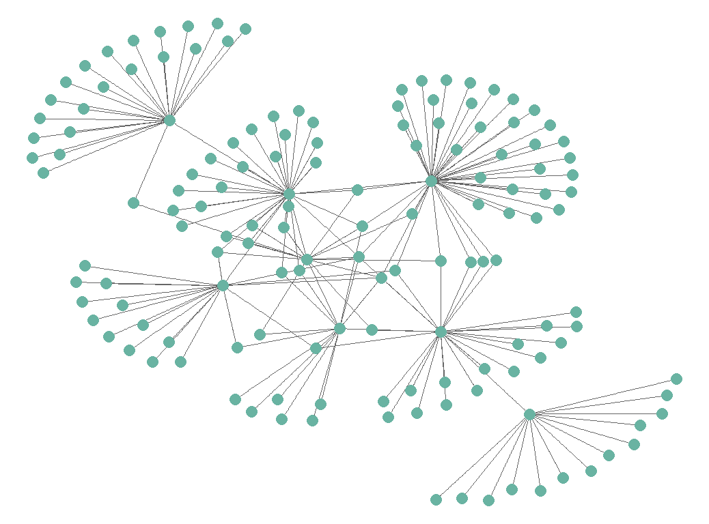
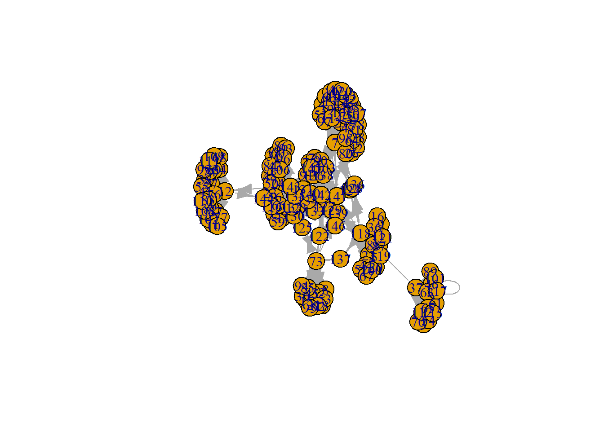
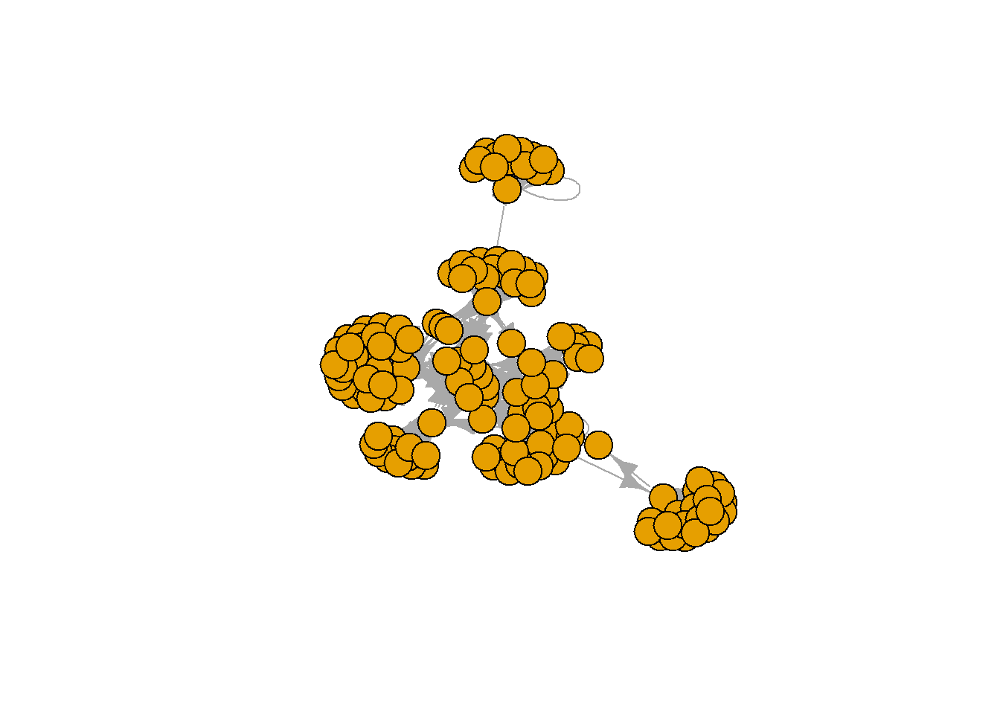

Este tutorial é uma introdução à análise de redes usando R.
Author
Wellington Santos Souza
Published
Sunday, 11 February 2024
Este artigo foi reescrito em Domingo, 11 de Fevereiro de 2024.

Introdução
A análise de redes sociais (ARS) é uma abordagem teórico-metodológica que tem como objetivo estudar as relações sociais entre atores. A ARS tem sido amplamente utilizada em diversas áreas do conhecimento, tais como sociologia, antropologia, psicologia, administração, economia, ciência política, entre outras. A ARS tem como base teórica a teoria dos grafos, que é um ramo da matemática que estuda as relações entre os objetos de um conjunto. A teoria dos grafos é uma ferramenta poderosa para a análise de redes sociais, pois permite a representação e a análise de redes sociais de forma rigorosa e sistemática.A análise de redes sociais permite a identificação de padrões de relações sociais, tais como centralidade, coesão, densidade, entre outros.
Objetivos
O tutorial tem como objetivo apresentar os conceitos básicos da análise de redes sociais, bem como as principais ferramentas e técnicas para a análise de redes sociais usando R.
Começando
Para começar nossa analise precisamos instalar alguns pacotes, para isso vamos usar o comando install.packages para instalar os pacotes igraph e sand.
Agora que já instalamos e carregamos os pacotes, vamos começar a nossa análise. Para isso precisamos de um conjunto de dados, para isso vamos usar o conjunto de dados aidsblog que está disponível no pacote sand.
Code
# help(aidsblog)# Evitando menssagens de erro...aidsblog <-upgrade_graph(aidsblog)
Visualizando o Grafo
Plotandoo Grafo
Code
plot(aidsblog)

Esse grafo ficou um pouco confuso, vamos tentar melhorar a visualização.
Primeiro vamos remover os labels dos vértices.
Code
plot(aidsblog, vertex.label=NA)

Ainda assim está confuso, vamos tentar melhorar a visualização.
Vamos reduzir o tamanho dos vértices e mudar o layout do grafo para Kamala Kawai
Warning: It looks like Source/Target is not zero-indexed. This is required in
JavaScript and so your plot may not render.
Métricas de Rede
Code
data.frame(Métrica =c("Número de nós","Número de relacões","Número de componentes","Densidade","Distancia geodésica média","Diâmetro","Transitividade global","Transitividade local"),Valor =c(round(gorder(aidsblog),1),round(gsize(aidsblog),1),round(components(aidsblog)$no,2),round(edge_density(aidsblog),2),round(mean_distance(aidsblog),2),round(diameter(aidsblog),2),round(transitivity(aidsblog, type ="global"),2),round(transitivity(aidsblog, type ="localaverage"),2)))%>%kbl(caption ="Métricas da Rede") %>%kable_classic(full_width = T, html_font ="Cambria")
Métricas da Rede
Métrica
Valor
Número de nós
146.00
Número de relacões
187.00
Número de componentes
1.00
Densidade
0.01
Distancia geodésica média
2.89
Diâmetro
6.00
Transitividade global
0.02
Transitividade local
0.25
Code
nos <-as.data.frame(V(aidsblog))# Centralidade de graunos$grau <-degree(aidsblog)# grau de intermediaçãonos$intermediacao <-betweenness(aidsblog)# grau de proximidadenos$proximidade <-closeness(aidsblog, normalized =TRUE)# Excentricidadenos$excentricidade <-eccentricity(aidsblog)# Centralidade de autovetornos$autovetor <-eigen_centrality(aidsblog)$vector# Criando tabela com métricas(metricas_ind <- nos %>%select(grau, intermediacao, proximidade, excentricidade, autovetor) %>%descr(stats =c("min", "q1", "med", "mean", "sd", "q3", "max"), transpose =TRUE))
S. Gopal, The evolving social geography of blogs. In Societies and Cities in the Age of Instant Access, ed. by H. Miller (Springer, Berlin, 2007), 139 pp. 275-294.
---title: "Análise de Redes Usando R"subtitle: "Introdução à Análise de Redes Usando R"description: "Este tutorial é uma introdução à análise de redes usando R."author: "Wellington Santos Souza"date: "2024-02-11"format: html: code-fold: true code-copy: true code-tools: truecategories: [ARS, r, Redes Sociais, igraph, sand]open-graph: description: "Em constru..." image: ../images/02.ars/Rplot.pngtwitter-card: description: "Em constru..." image: ../images/02.ars/Rplot.png---*Este artigo foi reescrito em Domingo, 11 de Fevereiro de 2024.* {fig-alt="Gráfico" width=50%}## IntroduçãoA análise de redes sociais (ARS) é uma abordagem teórico-metodológica que tem como objetivo estudar as relações sociais entre atores. A ARS tem sido amplamente utilizada em diversas áreas do conhecimento, tais como sociologia, antropologia, psicologia, administração, economia, ciência política, entre outras. A ARS tem como base teórica a teoria dos grafos, que é um ramo da matemática que estuda as relações entre os objetos de um conjunto. A teoria dos grafos é uma ferramenta poderosa para a análise de redes sociais, pois permite a representação e a análise de redes sociais de forma rigorosa e sistemática.A análise de redes sociais permite a identificação de padrões de relações sociais, tais como centralidade, coesão, densidade, entre outros.## ObjetivosO tutorial tem como objetivo apresentar os conceitos básicos da análise de redes sociais, bem como as principais ferramentas e técnicas para a análise de redes sociais usando R.## ComeçandoPara começar nossa analise precisamos instalar alguns pacotes, para isso vamos usar o comando `install.packages` para instalar os pacotes `igraph` e `sand`.```{r message=FALSE}if(!require(igraph)) install.packages("igraph")if(!require(sand)) install.packages("sand")if(!require(ggraph)) install.packages("ggraph")if(!require(tidyverse)) install.packages("tidyverse")if(!require(tidygraph)) install.packages("tidygraph")if(!require(viridis)) install.packages("viridis")if(!require(patchwork)) install.packages("patchwork")if(!require(hrbrthemes)) install.packages("hrbrthemes")if(!require(networkD3)) install.packages("networkD3")if(!require(kableExtra))install.packages("kableExtra")if(!require(summarytools))install.packages("summarytools")```Na sequência vamos carregar os pacotes que acabamos de instalar.```{r message=FALSE}library(igraph)library(sand)library(ggraph)library(tidyverse)library(tidygraph)library(viridis)library(patchwork)library(hrbrthemes)library(networkD3)library(kableExtra)library(summarytools)```Agora que já instalamos e carregamos os pacotes, vamos começar a nossa análise. Para isso precisamos de um conjunto de dados, para isso vamos usar o conjunto de dados `aidsblog` que está disponível no pacote `sand`. ```{r}# help(aidsblog)# Evitando menssagens de erro...aidsblog <-upgrade_graph(aidsblog)```## Visualizando o GrafoPlotandoo Grafo```{r}plot(aidsblog)```Esse grafo ficou um pouco confuso, vamos tentar melhorar a visualização.Primeiro vamos remover os labels dos vértices.```{r}plot(aidsblog, vertex.label=NA)```Ainda assim está confuso, vamos tentar melhorar a visualização.Vamos reduzir o tamanho dos vértices e mudar o layout do grafo para *Kamala Kawai*```{r}plot(aidsblog, vertex.label=NA, vertex.size=5, layout=layout.kamada.kawai)```Melhrou, mas mesmo assim ainda está confuso. Vamos tentar melhorar a visualização.Agora vamos diminuir o tamanho das setas.```{r}plot(aidsblog, vertex.label=NA, vertex.size=5, layout=layout.kamada.kawai, edge.arrow.size=0.3)```Agora sim, a visualização está bem melhor.### Melhorando a visualização com o pacote `ggraph`Podemos melhorar um pouco mais com o pacote `ggraph`.```{r message=FALSE, warning=FALSE}grafo <- as_tbl_graph(aidsblog)ggraph(grafo, layout = "kk") + geom_edge_link(colour ="#666666") + geom_node_point(colour ="#69b3a2", size = 5) + theme_void()```Ficou legal, mas vamos melhorar essa visualização.```{r message=FALSE}grafo_data <- as_long_data_frame(aidsblog)simpleNetwork(grafo_data, Source = 1, Target = 2, height = 880, width = 1980, linkDistance = 100, charge = -4, fontSize = 5, fontFamily = "serif", linkColour = "#666", nodeColour = "#69b3a2", opacity = 0.9, zoom = T )```## Métricas de Rede```{r}data.frame(Métrica =c("Número de nós","Número de relacões","Número de componentes","Densidade","Distancia geodésica média","Diâmetro","Transitividade global","Transitividade local"),Valor =c(round(gorder(aidsblog),1),round(gsize(aidsblog),1),round(components(aidsblog)$no,2),round(edge_density(aidsblog),2),round(mean_distance(aidsblog),2),round(diameter(aidsblog),2),round(transitivity(aidsblog, type ="global"),2),round(transitivity(aidsblog, type ="localaverage"),2)))%>%kbl(caption ="Métricas da Rede") %>%kable_classic(full_width = T, html_font ="Cambria") ``````{r}nos <-as.data.frame(V(aidsblog))# Centralidade de graunos$grau <-degree(aidsblog)# grau de intermediaçãonos$intermediacao <-betweenness(aidsblog)# grau de proximidadenos$proximidade <-closeness(aidsblog, normalized =TRUE)# Excentricidadenos$excentricidade <-eccentricity(aidsblog)# Centralidade de autovetornos$autovetor <-eigen_centrality(aidsblog)$vector# Criando tabela com métricas(metricas_ind <- nos %>%select(grau, intermediacao, proximidade, excentricidade, autovetor) %>%descr(stats =c("min", "q1", "med", "mean", "sd", "q3", "max"), transpose =TRUE))```## ReferênciasS. Gopal, The evolving social geography of blogs. In Societies and Cities in the Age of Instant Access, ed. by H. Miller (Springer, Berlin, 2007), 139 pp. 275-294.